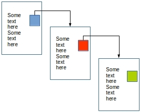
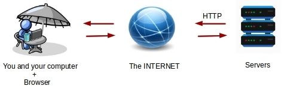
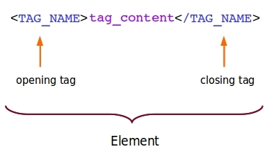
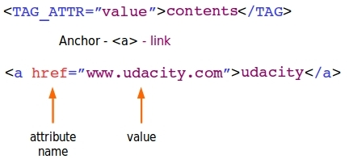
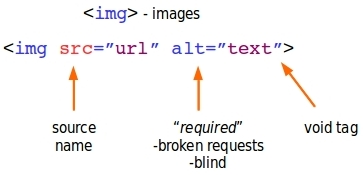
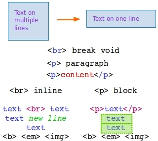
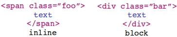
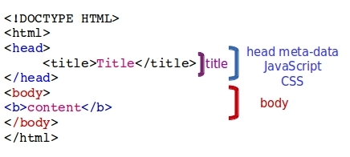

Important Concepts
The basics of the WEB
- The WEB
- HTML
- URL's
- HTTP
- Web Applications
How the Web works
The web is a collection of computers which communicate each other via network protocols.
When you are typing on your web Browser the url of a web site for example www.udacity.com, your computer sends a HTTP Request to a Server.
The Server finds the requested web document and sends it back to your computer. You can see now the web page on your web Browser.
WWW
WWW is an acronym for world wide web and is a collection of HTML documents.
HTML documents are made of HTML.
HTML
HTML is a Hypertext Markup Language and is the basis of every web page.
Links between the pages are called Hyper Links.
WEB as a collection of HTML-documents
You can imagine the WEB as a collection of HTML-documents which are linked to each other.

HTML contents
- The text content describes actually what you see.
- The markup describes how it looks like.
- The references to other document types like images, music, videos.
- The links to other pages such as the following examples:
The major pieces of internet
All in one the pieces of internet make the big picture of how it looks like.

HTML markup
An HTML markup is made of tags. A tag has the following structure.

Here are some examples for bold and italics tags.
I am going to learn to love HTML
I am going to learn to love HTML
I am going to learn to love HTML
HTML Attributes
An HTML attribute gives an HTML element a property.
- HTML elements can have attributes.
- Attributes provide additional information about an element.
- Attributes are always specified in the start tag.
- Attributes come in name/value pairs like: name="value".
The href attribute has the following syntax.

And here is the link of it.
udacity
Another example of an Image Element
The img attribute has the following syntax.

Below is an image of a new programmer.

Whitespace
You can add a new line or a paragraph, when you are writing HTML-documents, in order to make them more readable. There are some examples here.
Hello everyone!
We're using two lines now!
Hello everyone!
We're using two paragraphs now!
HTML elements are either inline or block. Block elements form an "invisible box" around the content inside of them.
The syntax and the differences between a line and a paragraph are given by the following image.

The HTML Span and Div Element
The HTML div element is a block level element that can be used as a container for other HTML elements.
The HTML span element is an inline element that can be used as a container for text.
We're using span now!
We are using div now!
.

HTML Basic structure
The basic structure of an HTML document looks like as following:

More information about HTML syntax
If you wish to know more about the syntax of HTML and to see more examples you can click the following link.
w3schools
Synopsis
In this very first introductory project we got an idea about the following terms.
- What a Web Page is
A hypertext document connected to the World Wide Web.
- How Coding Works
The short answer is that writing code tells the computer what to do, but it is not quite that simple.
- Computers are stupid
Computers are stupid because they interpret instructions literally. This makes them very unforgiving since a small mistake by a programmer can cause huge problems in a program.
- Programmers can't remember everything.
Programming requires projects and specific problems to solve to stick in your brain.
- Basic HTML vocabulary
It is about the syntax and the semantic of tags, attributes and other elements.